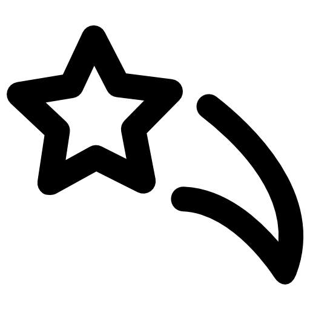

More About Me
Here are some of my interests
Anime
Recently, I've been obssessed with watching anime. I find them very interesting since they always provide fresh perspectives and ideas which I enjoy very much.

Blackpink
I love listening to Blackpink's songs. Not only that, I love supporting them and their goals. I also like their personality too. Personally, I find them very entertaining, funny, and extremely talented.

Stars
As cliche as it sounds, stars are incredibly beautiful and calm. Everytime I feel too flustered or overwhelmed, I look up to a starry night to calm myself. Something about the stars helps keep my mind at peace.